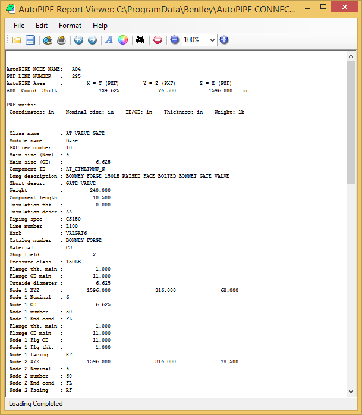

To View AutoPLANT Valve Data
- Click on point A04 (far point of the valve) and then select View > Information > AutoPLANT PXF Data. The following window will show valve data in addition to data of attached components such as gaskets and bolts.
This PXF data is very useful for verifying component size, type, weight, insulation, and material properties.

- For easier comparison of coordinate data, it is recommended that vertical axis be set as Z during import and the origin shift flag in CADAP.MAP be set to ‘N’. Press the close button (the X in the upper-right corner of the window) to close the PXF Data window.